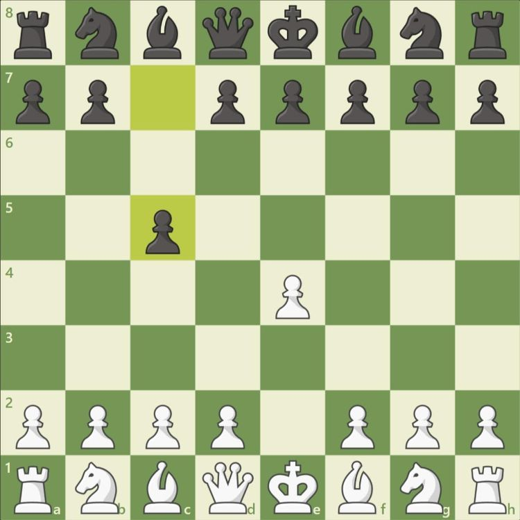
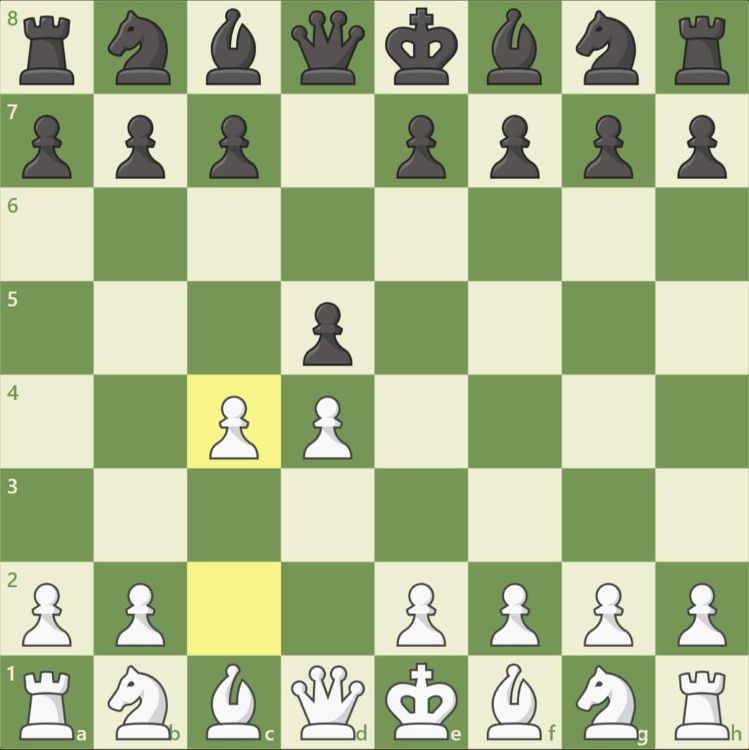

Posted on September 20, 2020 at 12:00 PM
Ruy Lopez
The Ruy Lopez is one of the most popular openings for white in chess. It's played as such: 1. e4 e5 2. Nf3 Nc6 3. Bb5. White's bishop puts pressure on the knight which protects the center and also enables white to develop rapidly. The Ruy Lopez leads to very complex play and gives white some long-term pressure but is very theoretical and gives black a large number of defenses to choose from.
Sicilian Defense
The Sicilian Defense is one of the most common responses to 1. e4. It's defined as such: 1. e4 c5. It allows black to challenge the d4 square with a side pawn and simultaneously imbalance the position. The Sicilian is frequently used when black needs to play for a win and gives black good attacking opportunities but unfortunately white has many ways to counter the Sicilian and can give white a significant number of attacking opportunities.
Queen's Gambit
The Queen's Gambit is one of the most famous lines and is characterized 1. d4 d5 2. c4. This opening is known for it's immediate attack on black's central pawn, and, although the c4 pawn isn't guarded it's not considered a real gambit since white can always get back his/her pawn by opening up the light square bishop. The Queen's Gambit is known for putting immediate pressure on black's central pawns but may force white to spend time retrieving his/her pawn and gives less chances to attack black's king.